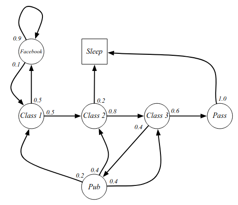
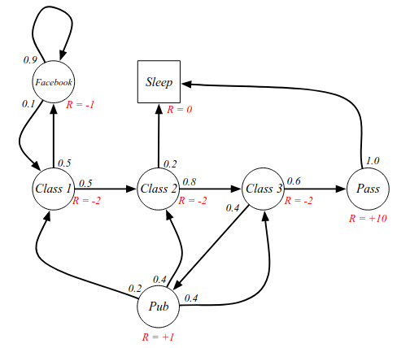
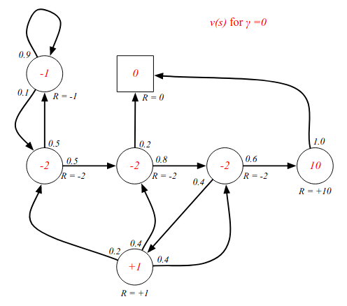
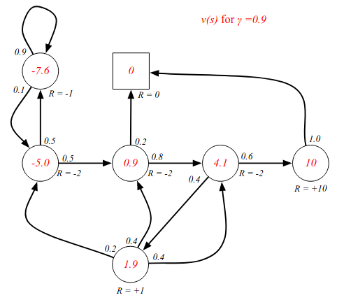
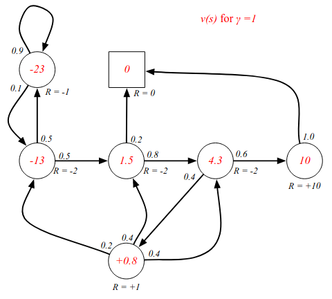
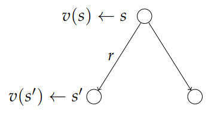
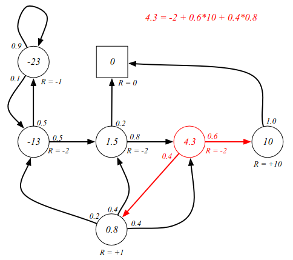

Introduction to Reinforcement Learning
Lecture 2 - Markov Decision Processes
Markov Process
We will develop the formalism for MDPs. Recall the discussion on agents and environments.
The agent is the algorithm/brain and the environment is the setting where the agent
acts e.g. factor floor if we are training some robot. We need some description of that
environment so we can understand it and apply some tools to it. That will be the
Markov Decision Process (MDP) which formally describe an environment for RL.
In this case the environment is fully observable; the current
state completely
characterises the process. Almost all RL problems can be formalised as MDPs.
Even partially observable problems can be converted into MDPs.
Bandits is a game where the agent is presented with a range of options, and where the game
ends after a single choice. This is actually an MDP with one state.
Recall the Markov Property. "The future is independent of the past given the present".
Defintion: Markov State
A state St is Markov iff
$$
P(S_{t+1}|S_t) = P(S_{t+1}|S_1,\ldots,S_t)
$$
The central idea is that what happens next in the environment only depends on the current state,
not the entire history. We can throw away the entire history.
State Transition Matrix
For a Markov state s and successor state s', the
state transition probability is
defined by:
$$
\mathcal{P}_{ss^\prime}(S_{t+1} = s'|S_t = s).
$$
The state transition matrix $P$ defines transition probabilities from all states s
to all successor states s'.
$$
\mathcal{P} =
\begin{bmatrix*}[ccc]
\mathcal{P}_{11} & \cdots & \mathcal{P}_{1n} \\
\vdots & & \vdots \\
\mathcal{P}_{n1} & \cdots & \mathcal{P}_{nn}
\end{bmatrix*}
$$
Each row sums up to 1 and describes the transition from some state s to all possible future states.
Markov Process
A Markov process is a memoryless random process, i.e. a sequence of random states S
1,
S
2,... with the Markov property.
Definition
Markov Process (or Markov Chain) is a tuple $\langle S,\mathcal{P} \rangle$ where
- S is a (finite) set of states
- 𝓟 is a state transition probability matrix:
$\mathcal{P}_{ss^\prime}(S_{t+1} = s'|S_t = s)$.
An example of a Markov Process is illustrated in this graph:

The 'Sleep' state in this graph is the terminal state. Examples of samples or episodes:
- C1, C2, C3, Pass, Sleep
- C1, FB, FB, C1, C2, Sleep
- C1, C2, C3, Pub, C2, C3, Pass, Sleep
- C1, FB, FB, C1, C2, C3, Pub, C1, FB, FB, FB, C1, C2, C3, Pub, C2, Sleep
We can write out a full transition matrix for this graph:
$$
\mathcal{P} =
\begin{bmatrix*}[cccccccc]
& \text{C1} &\text{C2} &\text{C3} &\text{Pass} &\text{Pub} &\text{FB} &\text{Sleep} \\
\text{C1} & & 0.5 & & & & 0.5 & \\
\text{C2} & & & 0.8 & & & & 0.2 \\
\text{C3} & & & & 0.6 & 0.4 & & \\
\text{Pass} & & & & & & & 1.0\\
\text{Pub} & 0.2 & 0.4 & 0.4 & & & & \\
\text{FB} & 0.1 & & & & & 0.9 & \\
\text{Sleep} & & & & & & & 1.0
\end{bmatrix*}
$$
Markov Reward Processes
So far we haven't talked about RL: there is no reward and no action.
Let us start adding that machinery. We extend the definition and add rewards.
Definition
Markov Reward Process is a tuple $\langle S,\mathcal{P}, \mathcal{R}, \gamma \rangle$ where
- S is a (finite) set of states
- 𝓟 is a state transition probability matrix:
$\mathcal{P}_{ss^\prime}(S_{t+1} = s'|S_t = s)$.
- 𝓡 is a reward function: $\mathcal{R}_s = E[R_{t+1}|S_t = s]$
- $\gamma\in[0,1]$ is a discount factor.
We can think of this as a Markov Process with some reward judgement: a value judgement
saying how good it is to be in some sequence. The reward says how much the immediate
reward is in a particular state. Adding them to the example:

What we care about is the total reward we get.
Definition
The return Gt is the total discounted reward from time step t.
$$
G_t = R_{t+1} + \gamma R_{t+2} + \ldots = \sum_{k=0}^\infty\gamma^k R_{t+k+1}
$$
where $\gamma\in[0,1]$ is the present value of future rewards.
The G can be thought of as the "Goal" of RL. G
t is currently just a random variable.
We are really interested in the expected value. A discount of 0 maximizes short term gains, "myopic"
evaluation. A discount of 1 maximizes future gains, a "far-sighted" evaluation.
So why do we use a discount factor? The is more uncertainty of the future - because we will never
have a perfect model of the future. Another reason can be to keep the mathematics bounded. Without
a discount factor, we might get stuck in an infinite loop within the Markov chain.
Value Function
The value function gives the long-term value of the state s and is the quantity we really care
about.
Definition
The state value function v(s) of an MRP is the expected
return starting from state s.
$$
v(s) = E[G_t\mid S_t = s]
$$
Starting from some state, what will our total reward be? From the example: how much
reward will we get if we start in Class 2 until the end, when we terminate? It is an
expectation because it is stochastic. We prefer states that give us a higher reward.
Sample returns for Student Markov Chain. Starting from $S_1 = C1$ and using $\gamma = \frac{1}{2}$.
Recall:
$$
G_1 = R_2 + \gamma R_3 + \ldots + \gamma^{T-2}R_T
$$
Returns:
$$
\begin{array}{lccc}
\text{C1, C2, C3, Pass, Sleep} &
v_1 = 2 - 2(1/2) - 2(1/4) + 10(1/8) & = & -2.25\\
\text{C1, FB, FB, C1, C2, Sleep} &
v_1 = -2 - 1(1/2) - 1(1/4) - 2(1/8) - 2(1/16) & = & -3.125\\
\text{C1, C2, C3, Pub, C2, C3, Pass, Sleep} &
v_1 = 2 - 2(1/2) - 2(1/4) + 1(1/8) - 2(1/16) \ldots & = & -3.41\\
\text{C1, FB, FB, C1, C2, C3, Pub, C1, $\ldots$} &
v_1 = -2 - 1(1/2) - 1(1/4) - 2(1/8) - 2(1/16)\ldots & = & -3.20\\
\text{FB, FB, FB, C1, C2, C3, Pub, C2, Sleep} & & &
\end{array}
$$
Each sample corresponds to a different sequence pass through the chain.
We can estimate the value of a state by simulating paths through the Markov
chain starting in the state and taking an average. The value function is
the expectation of all samples starting from the state.
Examples - state-value function for different discount values.

The short-sighted version. From Class 2 for instance, the immediate reward is -2
no matter what happens in the next step.

A more long-sighted discount factor changes all the values since we are looking into the
(probably) future. The value function is the expectation/average of all future states.

Bellman Equation for MRPs
This is perhaps the most fundamental relationship in RL: the Bellman equation.
(Common in dynamic programming). It's the idea that the value function obeys
these recursive decomposition. The general idea is quite simple: you can
take your sequence of rewards from this timestep and onwards and break it
up into two parts: the immediate reward, and the future reward.
$$
\begin{align*}
v(s) &= E[G_t\mid S_t = s] \\
&\\
&= E[R_{t+1} + \gamma R_{t+2} + \gamma^2R_{t+3} + \ldots \mid S_t = s] \\
&\\
&= E[R_{t+1} + \gamma\big(R_{t+2} + \gamma R_{t+3} + \ldots \big) \mid S_t = s] \\
&\\
&= E[R_{t+1} + \gamma G_{t+1} \mid S_t = s] \\
&\\
&= E[R_{t+1} + \gamma v(S_{t+1}) \mid S_t = s]
\end{align*}
$$
The value function tells us what the immediate reward is, and how good the future
reward will be in the state we progress to. The last transition from G to v()
is due to the law of iterated expectation.
Let's try to understand the Bellman equation: our value function now equals the
immediate rewards plus the expected future value of the next state. Any value
function must obey the Bellman equation.
$$
v(s) = E[R_{t+1} + \gamma v(S_{t+1}) \mid S_t = s]
$$
One way to understand them is by using backup diagrams:

We can think of this as a one step look-ahead search. From state s we can look
at the possible future cases after a single step. We see the current status,
the status after the next step, factoring in some immediate reward r.
From the current step we take the average of all possible future steps.
(Lost audio). This can also be represented by the following equation:
$$
v(s) = \mathcal{R}_{s} + \gamma\sum_{s'\in S}\mathcal{P}_{ss'}v(s')
$$
Investigating the Bellman equation in our example in a
non-discounted game. Starting from C3:

We can use the Bellman equation to verify the value function calculations.
The sum of probability multiplied by reward, as is denoted in the equation
in the image.
The Bellman equation can be expressed concisely using matrices.
$$
v = \mathcal{R} + \gamma\mathcal{P}v
$$
where v is a column vector with one entry per state. Written out more fully:
$$
\begin{bmatrix*}[c]
v(1) \\
\vdots \\
v(n)
\end{bmatrix*}
=
\begin{bmatrix*}[c]
\mathcal{R}_1 \\
\vdots \\
\mathcal{R}_n
\end{bmatrix*}
+
\gamma
\begin{bmatrix*}[ccc]
\mathcal{P}_{11} & \cdots & \mathcal{P}_{1n} \\
\vdots & & \vdots \\
\mathcal{P}_{n1} & \cdots & \mathcal{P}_{nn}
\end{bmatrix*}
\begin{bmatrix*}[c]
v(1) \\
\vdots \\
v(n)
\end{bmatrix*}
$$
Here there are n states.
Solving the Bellman equation. It is a linear equation and can be solved directly:
$$
\begin{align*}
v &= \mathcal{R} + \gamma\mathcal{P}v \\
&\\
(I - \gamma\mathcal{P})v &= \mathcal{R} \\
&\\
v &= (I - \gamma\mathcal{P})^{-1}\mathcal{R}
\end{align*}
$$
Computational complexity: O(n
3) for n states. A direct solution
is only possible for small MRPs. There are many iterative methods for large MRPs:
- Dynamic programming
- Monte-Carlo evaluation
- Temporal-Difference learning
These are basically methods for solving the Bellman equation more efficiently.